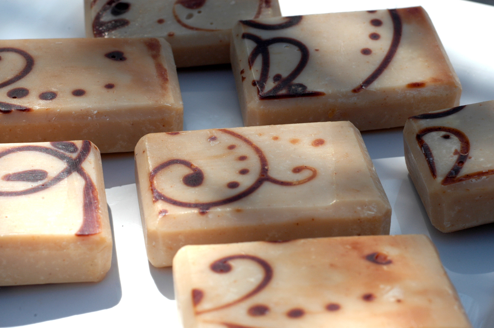
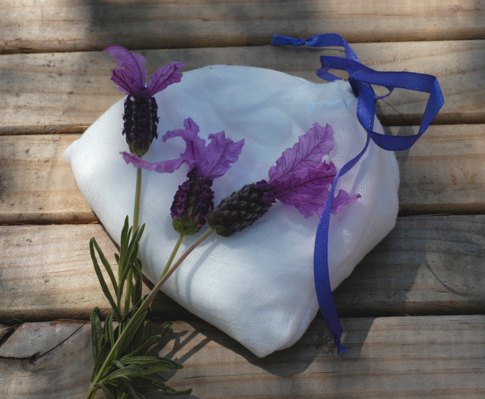
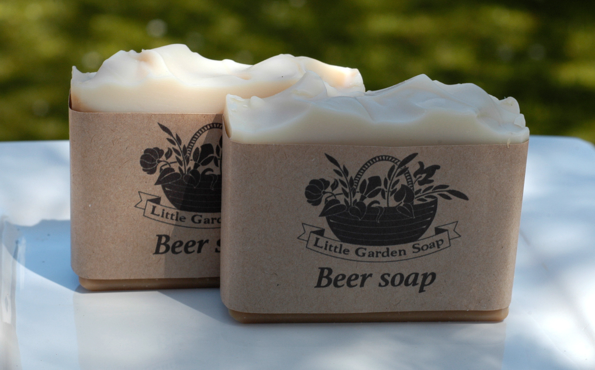
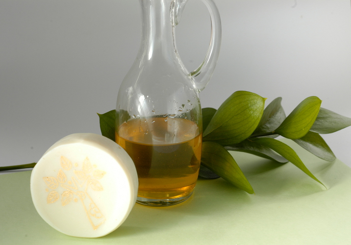
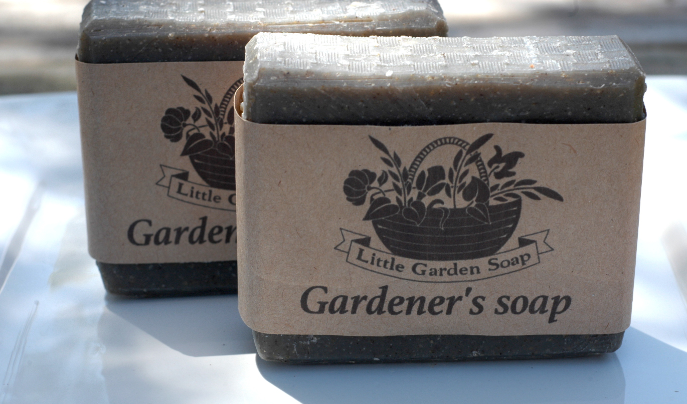
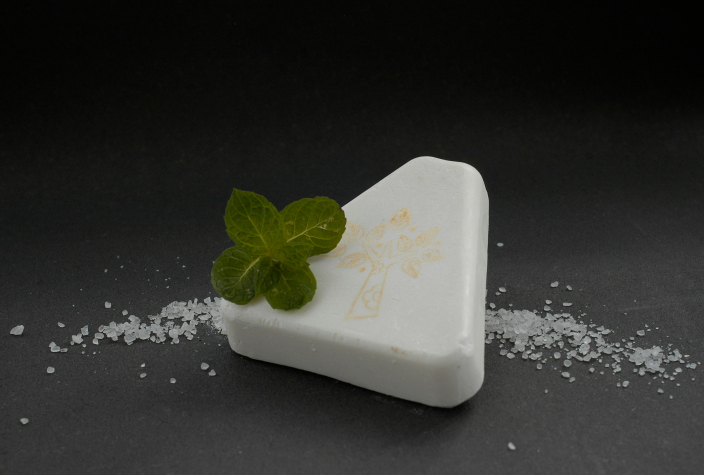

|  The design of this sandalwood soap was inspired by floor tiles of an old bythantium villa. |
 This lavender bath salt is packed into a ready to use muslin bag. |
|
|  This soap contains real bear that gives it a lot of bubbles. |
 Castile soap is made of only olive oil. This is the gentlest handmade soap you can make. |
|
|  Polenta, ground coffee and activated charcoal added to this soap make it the best solution for really dirty hands. |
 Half of the bar of this soap is sea salt that makes it very hard and soakproof. |
|